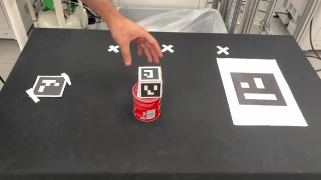
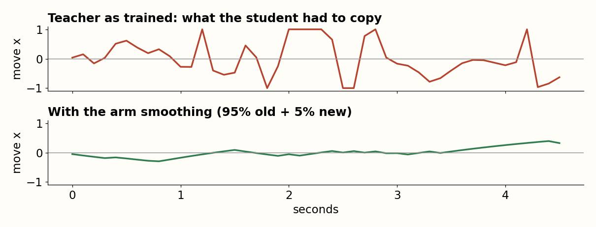

It only ever practised two.
One sentence. Never seen as a whole.
How the object moves in my clips becomes the reward.
It practises one or two steps at a time, then I ask for more.
It ticks off steps in the sentence: (done).
push · pick up · put down
where the object goes
1–2 commands at a time
cameras + the sentence
up to 8 in a row

| Push | 12 |
| Pick up | 10 |
| Put down | 21 |
A marker on every object → where it is, every frame.
It pushes the cube instead of lifting it.
It carries the cube to the goal and never lets go.
Where the object starts and ends, in all 43 clips
A straight line · 20 checkpoints · 3 cm window
From the object to where the sentence says. Paid per checkpoint, in order.
Exact positions · the next checkpoint · which command it's on
One or two commands per episode · a new random table every time
| Then I ask for | 2 steps | 3 | 4 | 6 | 8 |
|---|---|---|---|---|---|
| Success out of 100 new layouts | 100 | 94 | 100 | 94 | 100 |
SmolVLA, 450M parameters
In: front RGB · wrist RGB · language instruction · proprioception: end-effector position (x, y, z), yaw (sin, cos), gripper width
Out: end-effector Δx, Δy, Δz · Δyaw · gripper command · done
It is never told where the objects are or which step it’s on.
One try ≈ 7 hours
Compounding error
It only learned from the teacher’s clean runs. One small slip puts it somewhere it has never been, so its next move is worse, and it keeps drifting.
Information gap
The teacher knows exact positions and which step it’s on. The student only sees pixels: the gripper hides the cube, depth is a guess, and no image shows the step.
Low loss ≠ success
Copying single frames well doesn’t mean it finishes the task. Only a full test run tells you, and that takes hours.
Success out of 100 new table layouts · earlier versions
It never saw a mistake, so it can’t recover from one.
Fix: push the teacher off course with noise while recording; it corrects itself
Pick up the cube, put it on the target (2 steps): 6 → 52
Full left, full right. The student learns the average: nothing.

Fix: the arm keeps 95% of its motion, takes 5% of the new one
Pick up the cube (1 step): about 0 → 63
Success out of 100 new table layouts · earlier versions
The image usually gives the answer away, so it never learns to read.
Fix: record every scene twice, naming a different object each time: same pixels, only the words differ
Pick and place the named cube (2 steps): about 45 → 80
The teacher “pushed” by carrying. The student copied it and knocks things over.
Fix: no lifting during a push, in the teacher’s reward
Push the cube to the target (1 step): 16 → 59
| Pick up the cube | 94 |
| Cube to the target | 97 |
| Cube on the cylinder | 96 |
| Cylinder on the cube | 81 |
| Push the cube | 59 |
Success out of 100 new table layouts
End result looks right
4 steps: 14 · 6 steps: 12
Misleading: it gets there by redoing steps, out of order
All steps, in order
4 steps: 1 · 6 steps: 0
The real number
It loops. It can’t tell step 2 from step 4.
| What I gave it | 4 steps | 6 steps |
|---|---|---|
| Nothing, just the whole sentence | 1 | 0 |
| Older camera frames and its past actions | ≈0 | ≈0 |
| One command at a time, from a script | 65 | 38 |
| A counter: “k steps done” | 42 | 0 |
| Its own “(done)” marks in the sentence | 81 | 40 |
All steps done, in order, out of 100 · only the last row is the final model
Both cameras + the sentence
Move, turn, grip
+ one extra output: “is this step done?”
Above 0.85 for 0.5 s → write “(done)”
pick up the cubedone, then put the cube on the cylinderdone, then pick up the cube, then put the cube on the target, then …
The first command without a mark is the one to do.
Episodes have 1–2 real commands. Test sentences have up to 8.
grey = random padding, already marked · yellow = what the teacher really did
Never saw the current command at position 6
6 steps: 5
The final recipe
6 steps: 40
Too long: short tasks get worse
Cube on cylinder: 75 → 42
Its “done” output is ignored, so the sentence never changes.
pick up the cube, then put the cube on the cylinder, then pick up the cube, then put the cube on the target
4-step task: 0 of 50 finish. It stays on step 1.
Nothing done on the table, but the sentence says steps 1–2 are.
pick up the cubedone, then put the cube on the cylinderdone, then pick up the cube, then put the cube on the target
42 of 50 skip straight to step 3 and finish.
Yellow = the first unmarked command, what it should do now · videos 2× · an earlier model, same recipe
1 pick up the cube, 2 put it on the cylinder, 3 pick up the cube, 4 put it on the target, 5 pick up the cube, 6 put it on the cylinder, 7 pick up the cube, 8 put it on the target
The model never counts steps.
Every 0.1 s it only answers: “does this look finished?” If yes for half a second, the code puts “(done)” on the next command.
After step 4: cube on the target, arm still.
In training that picture always meant “finished, stop”. Episodes were 1–2 commands, so a put-down was always the end.
So it stops, and keeps saying “finished”.
The table never changes, so 5, 6, 7, 8 get marked half a second apart. Everything’s marked, so it’s done.
60 of 100 runs: 4 steps done, all 8 marked.
6 steps gets past this point: its step 5 is the cylinder, so the arm moves and the picture changes. The teacher does all 8, 100 of 100: the memory is the problem, not the skills.
1 pick up the cube, 2 put it on the cylinder, 3 pick up the cube, 4 put it on the target, 5 pick up the cube, 6 put it on the cylinder, 7 pick up the cube, 8 put it on the target
1 · Steps 5–8 repeat steps 1–4.
After step 4 the table looks exactly like a finished 4-step task.
2 · “Done” learned the picture, not the sentence.
It fires when the cube is lifted or resting and the arm holds still, whatever the current command.
3 · So the marks race ahead.
Steps 5–8 get marked in a burst, the sentence says “all done”, it stops.
60 of 100 runs: exactly 4 steps done, all 8 marked.
The teacher does this task 100 of 100: the skills are fine, the memory isn’t.
Stops at step 5, pick up the cylinder: 25 · step 4: 15 · step 2: 13 · knocks something over: 21
Two causes: early marks, and the cylinder, the weakest object (pick up 59 vs 94 for the cube).
| Limitation | What I’d do |
|---|---|
“Done” reads the picture, not the sentence So the marks run ahead: 8 steps is 0. | A separate “done” judge, trained with frames from the other steps as negatives, so it has to read the sentence. |
No undo A wrong “(done)” is never taken back. | Erase a mark when the judge disagrees, and redo the step. |
Cylinder and push are weak 59 each; the teacher gets 100. | More cylinder and push data; a teacher that grasps lower so the cylinder doesn’t tip. |
Not all of the reward comes from my clips Some parts are still set by hand. | Take more of it from the clips. |
One scene, in simulation Two objects, one target, fixed cameras. | Varied scenes, then a real robot. |
| Scale up | The problem | Does my method solve it? | What I’d add |
|---|---|---|---|
| 1 · More and new objects | Every object needs its own demos and reward | Yes, mostly. The reward scores any object’s 8 corners | Track objects without printed markers |
| 2 · New skills | Pour, wipe, open a drawer: the path’s shape matters | Partly. My template is a straight line | Keep the full curved path from the clips |
| 3 · Longer tasks | The robot loses its place | Not yet. 6 steps: 40/100. 8 steps: 0/100 | A “done” judge trained on look-alike pictures, plus undo |
| 4 · More human video | Human clips have no robot actions | Yes. Only the object’s track is used; the teacher makes the robot data | Big first-person video datasets; a clip’s end is a free “done” label |
| 5 · Other bodies (humanoid) | Mapping a human hand onto a robot hand is lossy | Yes. The reward never mentions a hand or an arm | Retrain the teacher per body, on top of a whole-body controller |
| 6 · Real world | The teacher sees exact positions; the sim isn’t real | No. Simulation only | Randomise the sim; the same tracker scores real runs |